Farve teori
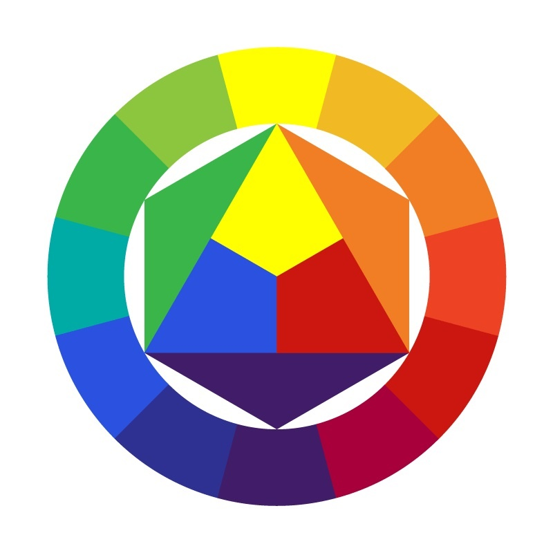
Farvehjulet
- Består af primære, sekundære og tertiære farver.
-
De primære farver
er blå, gul og rød. Disse kan ikke blandes med andre farver. De kan findes i trekanten, i midten af farvehjulet. -
De sekundære farver
er udgjort af 2 primære farver. De er placeret på ydersiden af trekanten. -
De tertiære farver
ses i den yderste del af farvehjulet. De er en blandning mellem de primære og sekundære farver.
RGB

RGB er et additivt farvesystem. Det betyder at lys tilføjes til farverne.
- Anvendes på computer og tv-skærme.
- For hver farve der tilføjes, desto lysere bliver det, indtil hvid opnåes.
CMYK
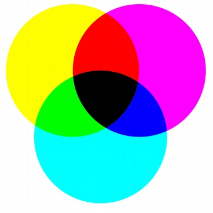
CMYK er et subtraktivt farvesystem. Her trækkes lys ud af farverne, i stedet for at blive tilføjet.
- Anvendes indenfor tryksager.
Kulør, mætning og lyshed
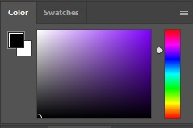
-
Kulør/HUE
er en graduering eller variation af en farve. Det vil sige, forskellige farver. -
Mætning
er hvor stor en mængde gråtone der er i farven. Desto mere grållig farven er, jo mere mættet er den. Modsætning til mætning er saturering. Lyshed
i en farve bestemmes ved en ren blandning af sort og hvid.
Farvehjul og mætnings opgave
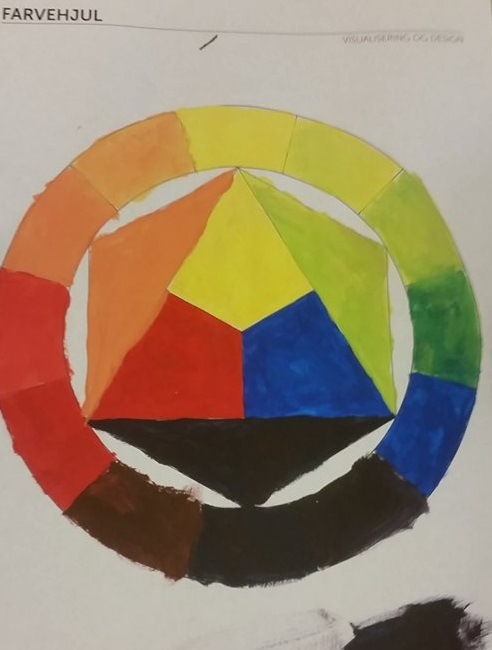 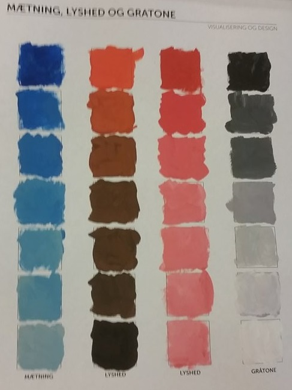
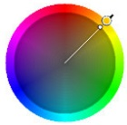
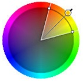
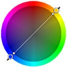

 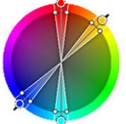
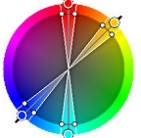
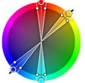
-
Monokrom
Går fra næsten hvid til sort, i nuancen af valgte farve. Giver et ensartet udseende. -
Analog
Farver der ligger op af hinanden. Såsom gul gul/rød rød/gul rød. -
Komplementær
Ligger direkte overfor hinanden i farve cirklen.
-
split komplementær
Ligger direkte overfor hinanden, men med et bredere farvespektrum. -
Triader
Tre farver der ligger lige langt fra hinanden. -
Tetriader
(Dobbelt- komplementære) Fire farver der ligger overfor hinanden.
Farve betydning
Farver kan have mange forskellige betydninger. Rød behøver nødvendigvis ikke være "ungdom" osv. Den kan betyde "fare".
- Gul - varme, klarhed og optimisme
- Orange - venlighed, glæde og selvtillid
- Rød - Ungdom, dristighed og spænding
- Lilla - Kreativitet, fantasifuld og vis
- Blå - tillid, pålidelig og styrke
- Grøn - fredelig, vækst og sundhed
- Sølv - Balance, neutral og rolig
I dette tilfælde vil rød betyde fare og opfordre til opmærksomhed
 Kilde: Pexels.com
Kilde: Pexels.com